About Me
I am an Artificial Intelligence Research Fellow with DeepLearning Lab at Ant Research Institute, which is under the leadership of CTO Zhengyu He. My research benefits from collaboration with esteemed colleagues including Dr. Jianguo Li, Dr. Yaohui Li, Dr. Zhangxuan Gu, Dr. Yan Hong, and Scientist Zhuoer Xu.
I pursued my M.E. in Automation and Artificial Intelligence Group at Nanjing University (NJU), where I was mentored by Prof. Chunlin Chen and Prof. Huaxiong Li. My B.E. was obtained at Southeast University (SEU). Currently, I focus on Foundation model architecture and Representation learning.
News
- [Feb. 2026] One paper on "test-time scaling UniDLLM" is accepted to CVPR 2026.
- [Jan. 2026] One paper on "Reasoning LLM" is accepted to ICLR 2026.
- [Aug. 2025] One paper on "Test-time adaptation" is accepted to EMNLP 2025.
- [July 2025] Two papers accepted to ACM MM 2025.
- [July 2025] One paper accepted to IEEE TCSVT.
- [May 2025] One paper on "Vision mamba" is accepted to ICML 2025.
- [Mar. 2025] Joined the DeepLearning Lab at Ant Research Institute for AGI research.
- [Feb. 2025] One paper accepted to CVPR 2025.
- [Dec. 2024] One paper accepted to AAAI 2025 as Oral.
- [July 2024] One paper accepted to Pattern Recognition.
- [July 2024] Showcased at WAIC.
- [July 2024] One paper accepted to ECCV 2024.
- [Dec. 2023] Two papers accepted to ICASSP 2024.
- [Sep. 2023] One paper accepted to NeurIPS 2023.
- [Aug. 2023] Won 2nd place (2/717) in AFAC Competition.
- [July 2023] One paper accepted to ACM MM 2023 as Oral.
- [April 2023] One paper accepted to ICML 2023.
- [Mar. 2023] Won 3rd place (3/1267) in ICDAR Competition.
- [Feb. 2023] One paper accepted to CVPR 2023.
- [Jan. 2023] One paper accepted to SCIS 2023.
- [July 2022] One paper accepted to ACM MM 2022.
Research Interest
I work in the field of few-shot learning, image generation, self-supervised learning, computer vision and machine learning. Currently, I focus on the following research topics:
Foundation Model Architecture
Exploring next-generation large language models (LLMs) and multimodal large models (MLLMs) with enhanced efficiency and unified architectures. His work investigates architectural innovations that enable parameter-efficient scaling, dynamic computation, and cross-modal unification while maintaining strong generalization capabilities.
Representation Learning
Crafting highly transferable representations — compact yet expressive abstractions that leap across tasks, modalities, and datasets with minimal adaptation. By unifying self-supervised objectives and multimodal fusion, he seeks representations that encode universal concepts, enabling rapid zero-shot or few-shot mastery of new domains.
Experiences
AI Researcher | AGI Center, Ant Research Institute
Mar 2025 – Present
AI Researcher | Tiansuan Lab, Ant Group
May 2022 – Mar 2025
Master Student | Nanjing University
Sep 2020 – June 2023. Advisor: Prof. Chunlin Chen and Prof. Huaxiong Li
Undergraduate Student | Southeast University
Sep 2016 – June 2020
Selected Publications Google Scholar DBLP
Tech Report Publications
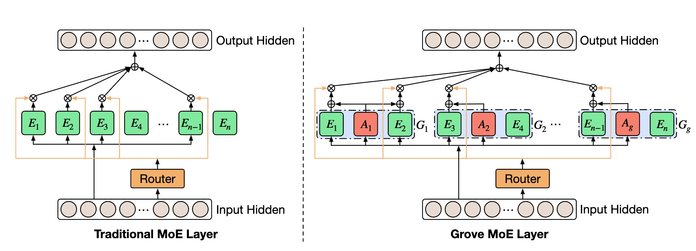
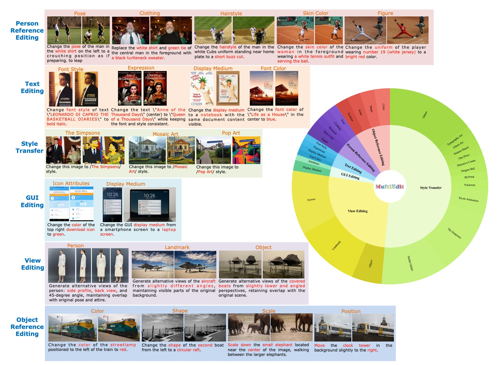
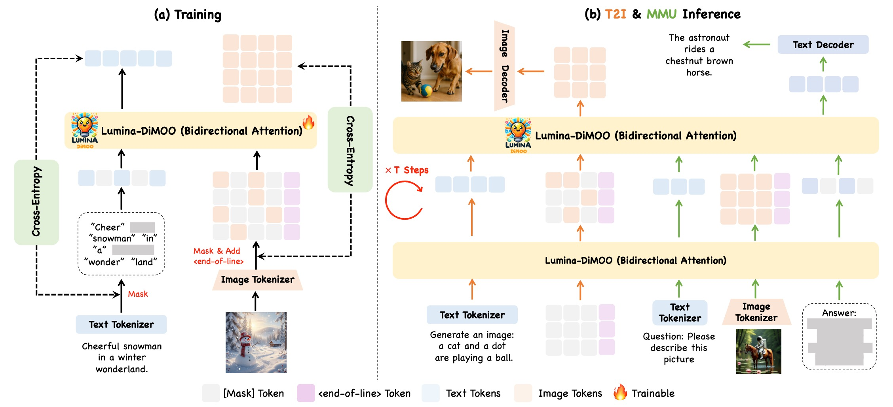
Top Conference / Journal Publications
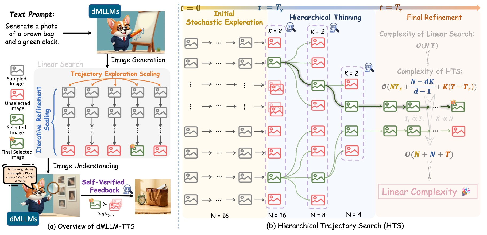
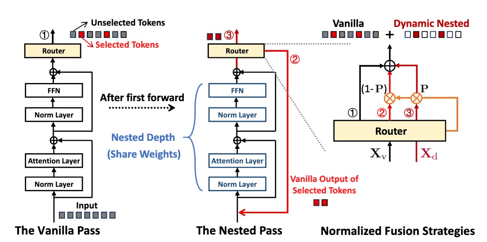
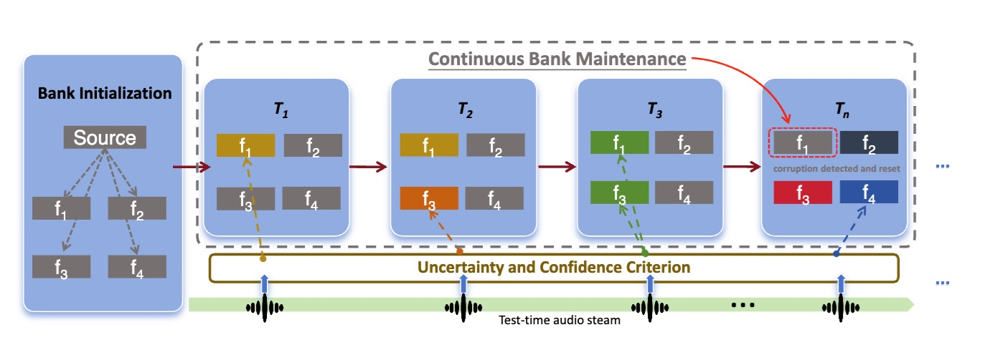
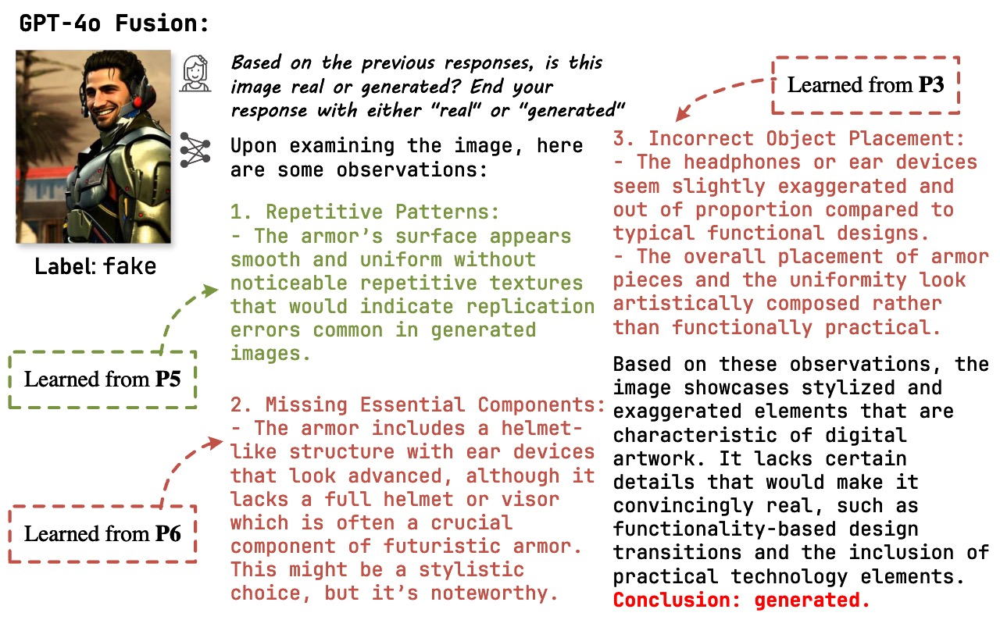
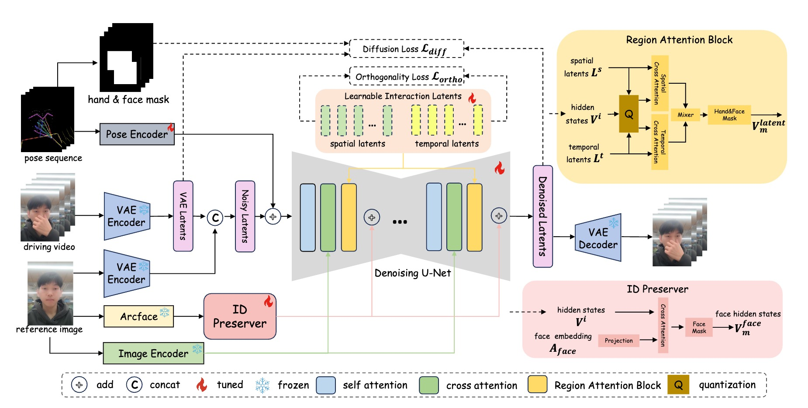
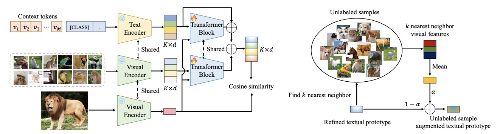
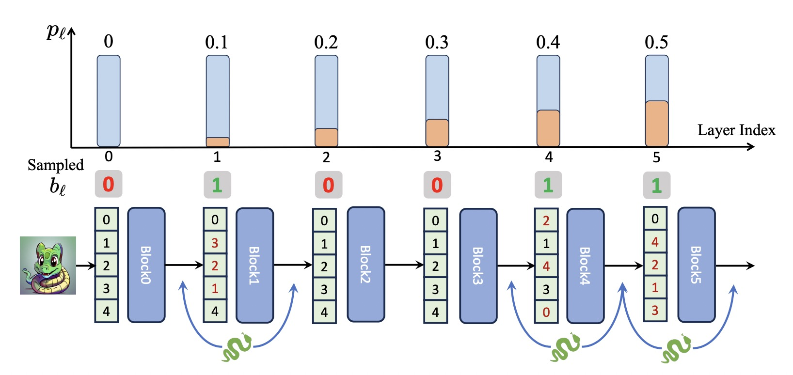
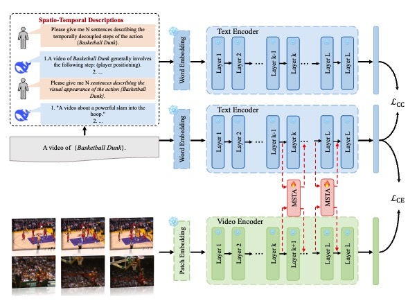
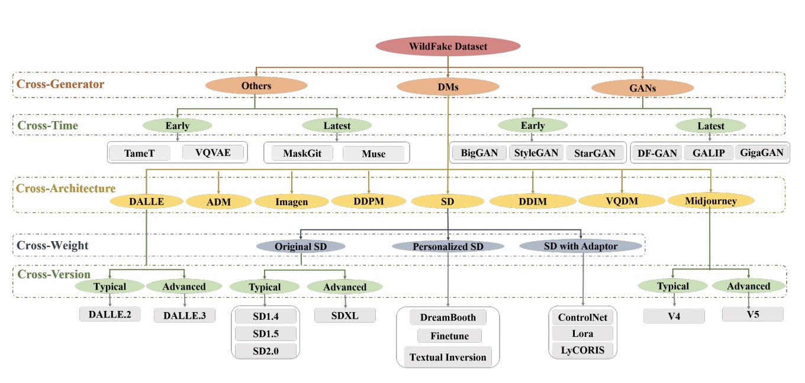
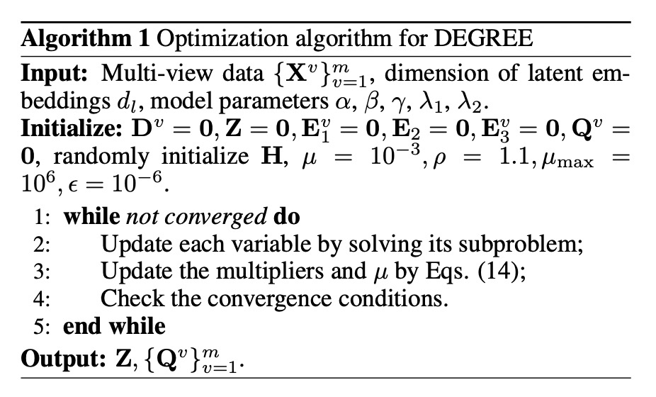
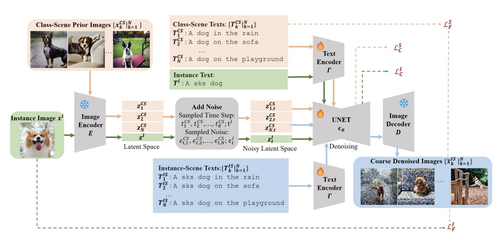
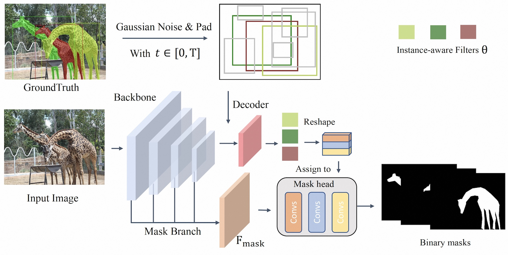
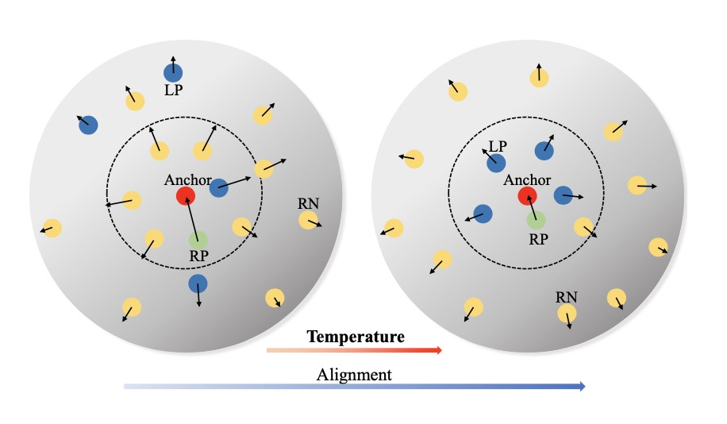

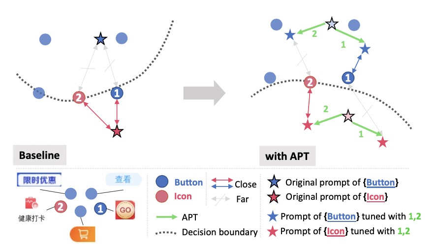
Awards
- 2023, 2nd place (2/717) in AFAC Financial Data Verification Competition.
- 2023, Nanjing University (NJU) Outstanding Graduates.
- 2023, 3rd place (3/1267) in ICDAR Detecting Tampered Text in Images Competition.
- 2022, Chinese National Scholarship.
- 2019, Meritorious Prize in the Mathematical Contest In Modeling (MCM).
- 2018, First Prize of Jiangsu Province in the National Mathematical Modelling Competition.
- 2018, National Special Award of the 8th Education Robot Competition Of China (ERCC).
Services
- ICLR'25, ICCV'25, CVPR'25, ICME'25, ICML'24/25, NeurIPS'24, WACV'24, ACM MM'23/24, AAAI'23/25, PAKDD'22, ICPR'22, Reviewer
- IEEE Trans on TIP/TCYB/TMM/TNNLS/TCSVT, Reviewer